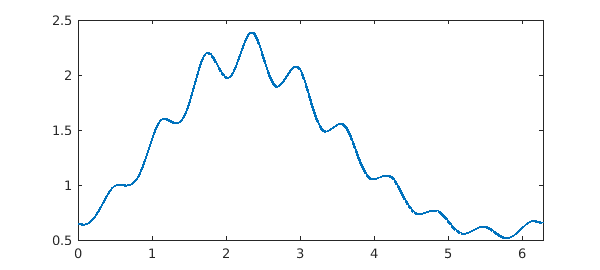
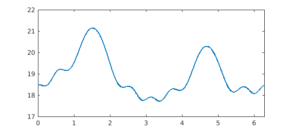
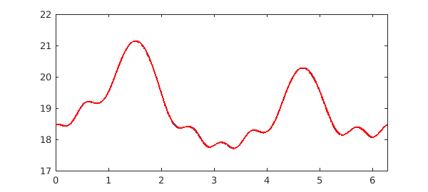

A Fourier spectral collocation method is now available in Chebfun to solve ODEs with periodic boundary conditions. The solution is a chebfun using a trigtech representation, that is, a trigonometric interpolant in equispaced points. This is the default method for periodic boundary conditions.
Consider the first-order ODE
$$ u'(x) + a(x)u(x) = f(x) $$
on $[0,2\pi]$ with periodic boundary conditions, where $a(x)$ and $f(x)$ are continuous, periodic complex-valued functions. This equation has a unique periodic solution if $\overline{a}=\frac{1}{2\pi}\int_0^{2\pi}a(x)dx\neq ik$ for all integers $k$. In particular, if $a(x)=a$ is a constant coefficient, this means $a\neq ik$ for all $k$.
Take for example $a(x)=1+\sin(\cos(10x))$ and $f(x)=\exp(\sin(x))$, and solve it with Fourier collocation. Since $\overline{a}=1$, this a well-posed problem.
LW = 'linewidth'; dom = [0 2*pi]; L = chebop(@(x,u) diff(u) + (1+sin(cos(10*x))).*u, dom); L.bc = 'periodic'; f = chebfun(@(x) exp(sin(x)), dom); u = L \ f figure, plot(u, LW, 2)
u =
chebfun column (1 smooth piece)
interval length endpoint values trig
[ 0, 6.3] 263 0.65 0.65
vertical scale = 2.4

The periodic solution $u$ satisfies the differential equation to high accuracy:
norm(L*u - f, inf)
ans =
8.749556720100966e-11
We can solve the same ODE with 2nd kind Chebyshev collocation using a cheboppref object with chebcolloc2 discretization.
pref = cheboppref; pref.discretization = @chebcolloc2; v = solvebvp(L, f, pref) hold on, plot(v, 'r', LW, 2)
v =
chebfun column (1 smooth piece)
interval length endpoint values
[ 0, 6.3] 412 0.65 0.65
vertical scale = 2.4
The solution $v$ is now a chebfun with a chebtech2 representation, that is, a polynomial interpolant in 2nd-kind Chebyshev points. It satisfies the differential equation to high accuracy too,
norm(L*v - f, inf)
ans =
1.841320778138919e-10
but is about $\pi/2$ times longer.
length(v)/length(u)
ans = 1.566539923954373
Consider now the second-order ODE
$$ u''(x) + a_1(x)u'(x) + a_0(x)u(x) = f(x) $$
on $[0,2\pi]$ with periodic boundary conditions, where $a_0(x)$, $a_1(x)$, and $f(x)$ are continuous, periodic complex-valued functions. Let $\Delta$ be the Hill discriminant of this equation
$$ \Delta = \frac{c(2\pi) + s'(2\pi)}{2}, $$
where $c(x)$ and $s(x)$ are the solutions of the homogeneous version of this equation, corresponding to the initial conditions $c(0)=1$, $c'(0)=0$ and $s(0)=0$, $s'(0)=1$. The nonhomogeneous equation has a unique periodic solution if $\Delta \neq 1$ [1].
Take $a_1(x)=\sin(\cos(x/2)^2)$, $a_0(x)=\cos(12\sin(x))$, and $f(x)=\exp(\cos(2x))$, and solve it with Fourier collocation.
a1 = chebfun(@(x) sin(cos(x/2).^2), dom); a0 = chebfun(@(x) cos(12*sin(x)), dom); L = chebop(@(u) diff(u, 2) + a1.*diff(u) + a0.*u, dom); L.bc = 'periodic'; f = chebfun(@(x) exp(cos(2*x)), dom); u = L \ f figure, plot(u, LW, 2)
u =
chebfun column (1 smooth piece)
interval length endpoint values trig
[ 0, 6.3] 105 18 18
vertical scale = 21

Again, the periodic solution $u$ satisfies the differential equation to high accuracy:
norm(L*u - f, inf)
ans =
4.672183783338909e-10
The solution with Chebyshev collocation in 2nd-kind points
pref = cheboppref; pref.discretization = @chebcolloc2; v = solvebvp(L, f, pref) hold on, plot(v, 'r', LW, 2)
v =
chebfun column (1 smooth piece)
interval length endpoint values
[ 0, 6.3] 161 18 18
vertical scale = 21

is again about $\pi/2$ times longer:
length(v)/length(u)
ans = 1.533333333333333
The second-order ODE we have solved is well-posed, and we can check this by computing the Hill discriminant and verifying that it is not 1:
L.bc = []; L.lbc = @(c) [ c - 1 ; diff(c) ]; c = L \ 0; L.lbc = @(s) [ s ; diff(s) - 1 ]; s = L \ 0; HillDiscr = 1/2*(c(2*pi) + feval(diff(s), 2*pi))
HillDiscr = 0.146112733327400
References
- M. S. P. Eastham, The Spectral Theory of Periodic Differential Equations, Scottish Academic Press, 1973.